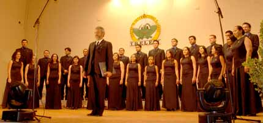
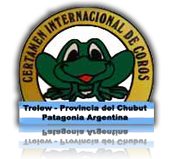
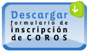

Certamen Internacional de Coros

El Certamen Internacional de Coros de Trelew es la razón de ser de la Fundación “C.I.C.”, creada en 1997 para darle apoyo y difusión. Cada edición reúne en Trelew a coros de la Argentina y del exterior, que compiten y comparten escenario durante una semana de música coral en plena Patagonia.
9ª edición — 2009
- Fechas: del 13 al 19 de septiembre de 2009.
- Sede: Trelew, Provincia del Chubut, Patagonia Argentina.
- Escenario: el histórico Teatro Verdi de Trelew, entre otros espacios de la ciudad.

La ranita

El emblema del Certamen es una rana sonriente dentro de un sello dorado con la leyenda “Certamen Internacional de Coros — Trelew, Provincia del Chubut, Patagonia Argentina”. Aparece en los afiches, en el banner de cada edición y en las piezas gráficas del sitio.Inscripción de coros
Los coros interesados pueden descargar el formulario de inscripción.
